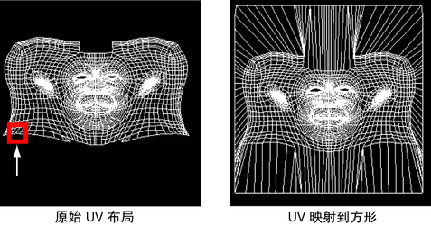
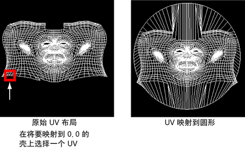

“映射边界”(Map Border)功能和“拉直边界”(Straighten Border)功能。
使用“映射边界”(Map Border)时，您可以将 UV 壳的边界上的 UV 移出，放到 0 到 1 纹理空间范围（方形）的边或 0 到 1 范围内的内切圆中。映射 UV 以使它们使用 0 到 1 的整个纹理范围。当您需要最大化纹理贴图所需的纹理空间时，该方法非常有用。
您也可以在移动边界 UV 时按比例缩放边。如果您在使用“松弛 UV”(Relax UVs)解开内部 UV 之前解开边界，则该方法非常有用。


将边界 UV 映射到方形或圆形
- 在“UV 编辑器”(UV Editor)中，在要映射其边界 UV 的壳上选择一个 UV。选择的 UV 将表示您希望创建的方形或圆形边界贴图的左下角。
所选择的 UV 非常重要，因为它将决定 UV 壳映射到 UV 纹理空间的 0,0 原点的位置。如果生成的 UV 边界贴图比较倾斜，您可能希望撤消该操作，然后选择另一个 UV 并重新映射。
- 选择(Modify > Map Border) >
 。
。
- 设置相应选项，然后单击“贴图”(Map)或“应用”(Apply)。
边界 UV 将基于所进行的设置映射。内部 UV 将保持不变。您可以使用“松弛 UV”(Relax UVs)功能解开内部 UV。
- 如果 UV 映射显示正确，则可以使用“松弛 UV”(Relax UVs)功能解开壳上的内部 UV。